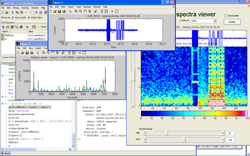

The GISMO suite
The GISMO suite is a collection of Matlab toolboxes for seismic waveform analysis built on a common platform. GISMO stands for GI Seismology Matlab Objects. The GISMO suite consist of two types of tools: (1) a core codebase of stable toolboxes; and (2) an ever-evolving set of contributed codes developed from these core products. The core products include the waveform suite and correlation toolbox, detailed below.
Download the GISMO suite
|
The Waveform Suite written and maintained by Celso Reyes
The waveform object is designed to allow easy data retrieval from a variety of sources and to make basic waveform research quick and easy. It is a toolset that allows the creation of more sophisticated programs without having to be concerned with all details. Features include: - Use any regularly sampled data stream
- Mathematical functions: +, -, /, .*, .^
- Standard manipulations: filter, crop, subset, subset, stack, normalize, automatic gain control, demean, detrend, taper, etc.
- Statistics: max, min, mean, median, etc.
- Waveform operations: hilbert transform, integration and differentiation
- Operate on single waveforms or thousands
- History feature tracks changes to your waveforms
- Plotting tools for all included data types
- Object architecture provides a stable base for writing more complex programs
The waveform toolbox was written and tested in Matlab release 2006b. Data can be imported from Antelope databases (requires the BRTT Antelope toolbox), Winston databases, SAC and Seisan files. With minimal coding, most any homegrown Matlab format can take advantage of the waveform architecture.
The waveform object:
- makes playing with data easier by automating the tedious aspects of data manipulation
- makes programs more stable by ensuring proper data typing
- makes code more portable by reading multiple formats and functioning on multiple systems
- makes troubleshooting faster by providing more detailed messages and warnings
Browse extensive waveform tutorial and matlab object primer.
Note that the Waveform suite is also distributed as a stand alone product on the Matlab Exchange. The version here is bundled with the correlation
toolbox and contributed software.
|
| The Correlation Toolbox written and maintained by Michael West
This toolbox provides an environment for analyzing waveforms with a suite of related cross-correlation techniques based on a common data object. Features include:

- Optimized cross-correlation routines capable of handling thousands of traces at a time
- Max correlation and lag time determinations for all event pairs (no "master" events)
- Dendrogram-type heirarchical clustering of event families
- Plotting tools for all included data types
- Suite of basic manipulation tools: filter, crop, subset, stack, normalize, automatic gain control, etc.
- Functions for waveform interferometry
- Optimized differential arrival times following Vandecar and Crosson, 1990
- Built on the waveform toolbox
The correlation toolbox was written and tested in Matlab release 2007b. Most functionality should exist with versions 2006 and later. A few features of the correlation toolbox require the statistics toolbox (linkage, cluster and dedrogram plotting). Because data handling is carried out using the waveform toolbox, data can be imported from Antelope databases, Winston databases, SAC and Seisan files. There is also an import routine for the CORAL format. Since it uses the waveform toolbox, any homegrown format can be imported with limited coding.
See correlation toolbox cookbook for demo of utilities.
Presentation "Tools and techniques in seismic waveform correlation", March 28, 2008 (5 Mb .pdf)
|
|

{kind=link}